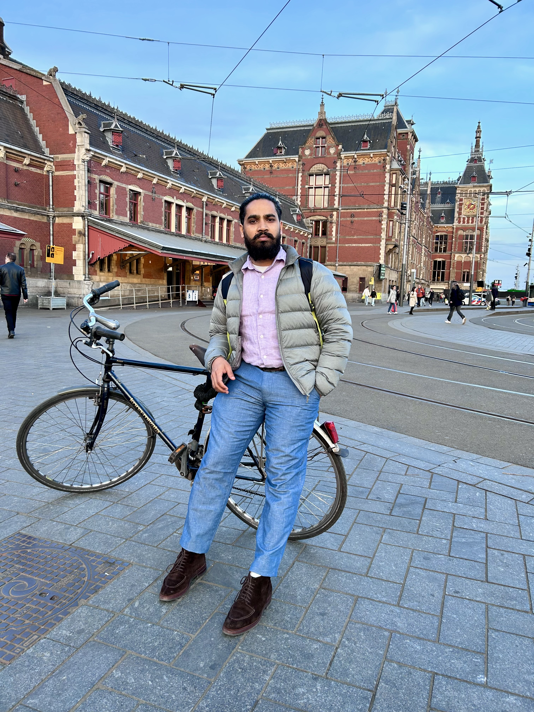

Who I am

If there is one thread that connects my work as an engineer, designer, storyteller, and urban mobility researcher, it is the fundamental refusal to accept dominant narratives without asking two critical questions: Who wrote this? and Whose interests does it serve? I am Vikas Bagde. My worldview, both personal and professional, is deeply anchored in Ambedkarite and Buddhist philosophies of humanity, equity, and compassion. For too long, the stories, histories, and physical spaces of the marginalized have been defined by those who hold power. Whether we are talking about cultural festivals, the media, or urban infrastructure, the ruling classes have historically used their monopolies to safeguard their own interests. They often manufacture narratives designed to make the oppressed live in guilt—wasting our energy on self-doubt so we do not have the time to anticipate their next move.
I have zero tolerance for that kind of systemic bullshitting. I believe in calling it out, keeping it simple, and focusing on real-life impacts rather than hiding behind elite, academic jargon. My work is about reclaiming our spaces, our stories, and our solutions.
Through my writings—such as my essays for Round Table India—and my community work, I have consistently challenged the dichotomy between the oppressor's narrative and the lived realities of the Bahujan masses. I often ask: Why can't I find my history easily in written form? Why do we have to rely on someone else's memory? Why are the indigenous, frugal traditions of our communities erased from textbooks? Because of this historical erasure, I rely heavily on storytelling and emergent media to bridge the gap. I believe that education and technology must be used for problem conceptualization and community participation from the ground up. The marginalized do not need to be "saved" or lectured to; they need the space to assert their own lost voices. It is our responsibility to unlearn the illogical rules set by a man-centric, caste-driven society and to rebuild a framework rooted in actual justice.
This exact same critical lens drives my academic research. I hold a degree in Mechanical Engineering and a Master’s in Ecology, Environment, and Sustainable Development, and I am currently a PhD candidate in the Urban Planning group at the University of Amsterdam.
In the global discourse of urban planning, mobility is almost exclusively framed as a technical problem. The "experts" want to push techno-centric, top-down solutions—smart cities, autonomous vehicles, and hyper-automated infrastructure—that are driven by profit and completely detached from the everyday realities of the people who actually navigate these cities.
I challenge this framing. Mobility is not just engineering; it is profoundly human, social, and political. It is shaped by power dynamics and place.
My doctoral research examines the evolution and adoption of Electric Rickshaws in India. This is a street-born, bottom-up innovation that has quietly but radically transformed last-mile connectivity and public transport, entirely without the orchestration of corporate R&D or conventional planners. These low-emission vehicles represent a frugal, community-driven solution that provides an efficient alternative for the masses.
By analyzing the narratives surrounding innovations like the e-rickshaw, I aim to expose how global policy agendas and subsidy regimes often prioritize elite, high-tech fantasies while marginalizing the indigenous, grassroots solutions that are actually doing the heavy lifting in the Global South.
I am a lifelong learner who learns from people, incidences, and the spaces in between. I didn't come to academia just to write papers that gather dust in university libraries. I came here to understand the mechanics of power and to use that knowledge to dismantle the complex challenges created by greedy and oppressive systems.
Whether I am mentoring students through initiatives like Nalanda, speaking on podcasts about sustainable mobility, or breaking down the politics of media and assertion, my goal remains the same: to democratize knowledge and innovation. I want to use my skills to help make this world a more livable, equitable space for everyone.
If you are interested in unlearning the dominant narratives and exploring how technology, policy, and society can actually serve the people from the bottom up, we will have a lot to talk about.

Blog
Great things demands patience....😜
Education
For full details on my academic trajectory, download my full CV as a PDF.
Dissertation: "Understanding the Influence of Narratives on the Process of Bottom-Up Mobility Innovations."
Supervisors: Prof. Marco te Brömmelstroet & Dr. Hebe Verrest.
Tata Institute of Social Sciences (TISS), Guwahati, India.
Thesis: "Assessing Integration of Electric Vehicles and Its Environmental and Social Impact in Assam, India"
St. Vincent Pallotti College of Engineering and Technology, Nagpur University, India.
Research & Professional Experience

Conducting doctoral research on the influence of narratives on bottom-up mobility innovation. Developing and applying qualitative research methods including narrative analysis, semi-structured interviews, and fieldwork.
Conducted monitoring and evaluation of Corporate Social Responsibility (CSR) projects for corporate clients. Contributed to the design, assessment, and reporting of CSR interventions using programme evaluation frameworks.
Project: "Capacity Building on Climate Change Vulnerability and Risk Assessment in the States of India." Led extensive stakeholder engagement and trained over 100 central and state government officials. Contributed to an official Government of India report on climate change vulnerability.
Media, Web & Public Engagement
A selection of my podcast appearances, conference presentations, and published articles advocating for sustainable mobility, marginalized voices, and equitable planning.
Podcast & Video Appearances
- Podcast: Talk That Science (Echobox Radio). Discussed the evolution of electric rickshaws in India and how bottom-up mobility parallels the historical rise of bicycles in the Netherlands. Listen Here
- Public Talk: Introducing the Netherlands (Studium Generale - Tilburg University). Panel discussion reflecting on mobility networks, storytelling, and problem-solving through public participation. Watch Here
- Podcast: Guest appearance on Spotify discussing themes of sustainability and inclusion. Listen on Spotify
Selected Articles (Roundtable India)
- Dalit University: Do we need it? (2017)
- Why am I celebrating Diwali and Dusshera? (2017)
- Why I celebrate Bhim Jayanti? (2017)
- War: Win win time for the ruling class (2016)
- Media: The oppressor's tool to divide and rule (2016)
Conference Presentations & Working Papers
- Bagde, V. (In Preparation). Position paper on Electric 3 wheelers in South Asia.
- Bagde, V. (2025, October). Contesting regime: Bottom-up mobility innovations. T2M Annual Conference, Eindhoven University of Technology.
- Bagde, V. (2024, September). Reimagining innovation paradigm: Potential of Bottom-up approaches in sustainable mobility. Tensions of Europe Conference, Germany.
Teaching & Academic Leadership
Teaching Experience
Academic Service
- PhD Representative (2022-2024): Elected liaison between PhD candidates and departmental leadership at GPIO, UvA.
- Organiser: Annual Research Day, GPIO, UvA (June 2024).
- Logistics Coordinator: Cycling Research Board Conference (October 2022).
- Founder: Writing Club for Researchers.
- Co-founder: Intuition Study Circle, TISS Guwahati.
- Founder & Organiser: Resistance Week, TISS Guwahati (December 2017).
Off the Clock: Social Engagements
When I am not deep into urban planning research or writing, you will likely find me outside. I balance academic rigor with creative and physical pursuits, primarily focusing on wildlife photography, leather crafting, and running.
Challenge Me!
Do you have a half-marathon you are training for? A bespoke leather project idea? Or a lead on a great birding trail near Amsterdam? Let's connect. I am always open to a friendly run or a creative collaboration.